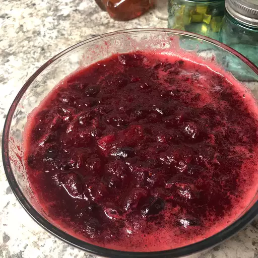

Cranberry Sauce Recipe

Description
This cranberry sauce recipe uses fresh cranberries, sugar, and orange juice to make a Thanksgiving classic.
Ingredients
- Fresh Cranberries: Opt for fresh cranberries that are firm, plump, and blemish-free. Lighter colored cranberries are best for sauce, as they contain more pectin and result in a thicker consistency.
- Sugar: White sugar does more than add sweetness to classic cranberry sauce: It also absorbs liquid and, when heated, thickens the sauce.
- Orange Juice: All cranberry sauce starts with a liquid base. If you don't like orange juice, you can substitute pomegranate juice or even red wine.
Steps
- Heat orange juice in a saucepan
- Stir in sugar and cook until it dissolves
- Add cranberries and continue cooking, stirring often, until they start to pop
- Remove the sauce from heat and transfer it to a bowl -- the cranberry sauce will continue to thicken as it cools